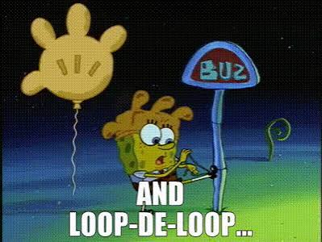

PSTAT 10 Data Science Principles
Lecture 4: Functions, Branching and Loops
![]()
August 6, 2026
Introduction
🔁 Review: Lecture 3
👈 Last lecture we started exploring higher-dimensional data structures such as:
- Vectors \((1 \times n)\)
- Matrices \((n \times p)\)
- Arrays \((n_1 \times n_2 \times ... \times n_k)\)
- Lists (ordered items)
- Accessing data; creating data structures
👀 Outline: Lecture 4
👇 This lecture we look into automating repetitive tasks using:
- Functions
- Branching (
if,else,else if) - Loops (
for,while,repeat) - Control Flow

Functions
🧩 What is a Function?
In programming, a function is a self-contained, reusable block of code designed to perform a specific task.
- A function can take zero or more inputs and returns at least one outputs.
- Writing a function lets us reuse the same logic without retyping it — a core idea in programming.
🧰 Functions in R
We have implicitly and explicitly used dozens of functions already:
Constructing Objects
c(),matrix()array(),list()
Math & Summaries
exp(),log(),sqrt()mean(),median(),sum()
We’ve also used functions that interact with our environment rather than our data, such as getwd() and setwd().
- Some functions did not require inputs; some did not appear to produce outputs.
- In reality, all functions output something, even if it is just a setting change or manipulating objects.
🏗️ Function Anatomy
We define a function in R using the following syntax:
- R functions can take any number of inputs.
- R functions can only return at most one output (sort of):
- We can get around this using data structures such as lists or using packages.
Example — Matrix Deconstruct Function
We wish to define a function that takes a matrix as an input and returns the first and last rows.
📌 Notice that the function we define is listed in the environment pane, just like any other object.
Example — Testing Functions
To test our function we define a \(4\times 3\) matrix and apply our function to obtain:
[[1]]
[1] 1 5 9
[[2]]
[1] 4 8 12- The output is a list of two elements — the first and last rows - but one object.
We can access each element individually using double-bracket indexing:
[1] 1 5 9[1] 4 8 12Let’s stress-test with an edge case: a single-row matrix.
💪 Exercise — Defining Functions
02:00
Take 2 minutes to attempt to define your own function.
We wish to write a function called inc_nth_root which does the following:
- Takes two inputs (labels are arbitrary but let’s use
vandn). - Increments
vby1(i.e. adds 1 tov). - Computes the \(n\)th root of
v(i.e.vraised to the power of \(1/n\)). - Returns the resulting value.
✅ Solution — Defining Functions
First Solution
The first solution we write is very explicitly clear but slightly inefficient:
✅ Solution — Testing Functions
We test our solution with the following unit tests:
[1] 4 4[1] 2 2🎛️ Omitted Arguments
When defining functions we often have cases where we typically only use a handful of the arguments since the others have default inputs.
- To define such a function we can specify default values of our inputs which the function will assume to be used unless the user specifies otherwise.
Improving inc_nth_root
Currently if we omit our inputs we get an error message:
We can define default values for our inputs to avoid this problem:
We have specified that if no input is provided, the function will assume v = 0 and n = 2.
Branching
🔀 Branching
To protect our function against other problems (such as incorrect data types) we introduce the concept of branching.
R allows branching blocks using if, else and else if statements which each do the following:
if— takes a logical input and if the input is satisfied executes the branched code.else if— follows anifstatement as a catch all, applying a second logical test when the preceding condition is not satisfied.else— the final part of a branching block: if none of the previous branches were triggered this code is executed.
Below is a full branching block (an if/else block) using all three:
Example — Branching
Suppose we wish to design a function that returns certain character strings describing whether the length of our vector x is below, between or above certain values.
Notice we defined a default input value of 0 to avoid error messages!
🛠️ Robustifying inc_nth_root
Returning to our inc_nth_root function we wish to make it robust to the following problems:
- Incorrect input datatypes returns an error message.
- Using 0 as the \(n\) input returns
Inf. - Providing a vector input returns a vector.
- Omitting the \(n\) input returns an error message.
We can now fix these issues by using branching blocks.
📌 Notice is.numeric(v) == FALSE | length(v) != 1 is a reusable check — if we needed it in several functions, we could write it once as its own function and nest it inside each one.
🪆 Nesting Functions
Functions can call other functions inside their body — this is known as nesting functions.
- Breaking a task into smaller functions makes each piece easier to write, test, and reuse.
- A common use case is factoring out repeated logic — like the input check above — into its own function.
Example — Nesting Functions
Suppose several of our functions need to check whether an input is a valid numeric scalar. Rather than repeating the check each time, we write it once:
We can now nest numeric_scalar() inside inc_nth_root instead of repeating its logic:
Testing the Robust inc_nth_root
💪 Exercise — Defining Robust Functions
05:00
Try to define a function named is_divisible that takes two integer inputs p and q that behaves as follows:
- If either
porqare not numeric then print “Error: invalid input!” - If
pdividesqthen print “p divides q!” - If
pdoes not divideqthen print “p does not divide q!”
Hint: The modulo operator %% helps determine when p divides q:
[1] 0[1] 1✅ Solution — Defining Robust Functions
✅ Solution — Testing Robust Functions
Loops
🔁 Iteration
One of the primary advantages of programming is the ability to iterate actions rather than repeating them manually.
Loops
In programming, iterative structures are called loops, and R has three types of looping structure:
- for loops — repeat a procedure over a specified number of iterations.
- Typical use: applying the same operation to each element of a vector or each column of a data set.
- while loops — repeat a procedure while a certain condition is satisfied and stop as soon as it isn’t.
- Typical use: running a simulation or optimization until it converges, when you don’t know in advance how many steps it will take.
- repeat loops — the reversed while loop, repeating a procedure while a certain condition is not satisfied and stopping as soon as it is.
- Typical use: retrying an action — like drawing a random sample — until it meets some requirement.
For Loops
The most common looping structure in R is the for loop, which has the following general syntax:
- We typically choose variables
i,j,kfor the counter and specify the range with some vector. - The actions can be dependent on the index
ior not, depending on the functionality of the loop.
Example — For Loop
We wish to construct a for loop that:
- iterates over the column names of the inbuilt
irisdata set; and - prints the number of characters in the column name.
While Loops
Another helpful looping structure in R is the while loop, which has the following general syntax:
- While loops continue to iterate until some termination condition is
TRUE. - Define the termination condition carefully as you risk having your loop run indefinitely.
- While loops are useful when we don’t know exactly when they end, or when we are interested in the value of the loop index.
Example — While Loop
This loop never updates i, so the termination condition is never met — it will run forever.
🔂 Repeat & Break
The final looping structure we consider is the repeat loop, which has the following general syntax:
Repeat & Break Example
- The repeat and break loop is a reversed while structure which performs an action until the condition is met.
- We don’t often use this type of loop, but still be cautious as it carries the same risks as while loops.
🚦 Control Flow
Everything we have seen so far is a type of control flow:
- Sequencing (first A, then B, then C, …)
- Branching (if A → ACTION, else if B → ACTION, …)
- Iteration (do A1, do A2, …, STOP)
Other types of control flow include:
- Non-determinacy (do A or B or C or … at random)
- Concurrency (do A and B and C simultaneously)
- Recursion
🧭 Thinking About Control Flow
Whenever you write or read a block of branching or looping code, it helps to explicitly ask yourself:
- What is the order of execution? Code runs top-to-bottom unless a branch or loop redirects it.
- Are the conditions in a branching block mutually exclusive? Could more than one — or none — ever be true?
- Could a loop run zero times, once, or forever? Have you checked all three?
- Trace through your code by hand with a concrete, simple input before trusting it on real data.
- Ask what happens at the boundary — the first iteration, the last iteration, an empty input.
🧹 Good Practices
- Keep conditions simple and readable — break complex logic into named intermediate variables or helper functions.
- Avoid deeply nested
if/forblocks where possible; nesting makes code harder to read, debug, and test. - Always double-check a loop’s termination condition before running it — an infinite loop can crash your session.
- Comment non-obvious branches so that future-you (or a grader) understands your intent.
- Test edge cases deliberately, not just the “typical” case — recall our single-row matrix and
n = 0examples!
⚡ Loops vs Vectorization in R
R is built around vectorized operations — many tasks that “feel” like they need a loop already have a built-in vectorized solution.
📌 Prefer vectorized functions over loops in R when one is available — they are usually faster and more concise.
- Loops are still essential when each step depends on the previous one, or when no vectorized alternative exists.
💪 Exercise — Putting Everything Together
03:00
Create a function star_triangle that takes a numerical input \(n\) and returns a right triangle made up of \(n\) rows of stars in the format shown below:
[1] "*"
[1] "*" "*"
[1] "*" "*" "*"
[1] "*" "*" "*" "*"
[1] "*" "*" "*" "*" "*"
[1] "*" "*" "*" "*" "*" "*"Don’t worry about error messages, just assume the input will always be some integer.
✅ Solution — Putting Everything Together
Summary
✅ Topics Covered
🤔 Today we began exploring automation:
- Functions
- Branching
- Loops
- Control Flow
📅 Next Class
🤩 Next class we look at how these techniques are used to solve problems by applying:
- Algorithmic Thinking
- Branching Logic
- Iterative Logic
- Recursive Logic